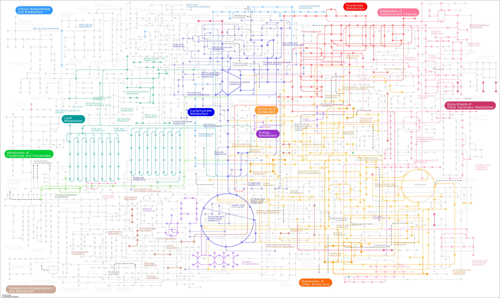

Metabolite enrichment
Overview
Introduction
Pathway enrichment methods were originally developed for gene enrichment.
They are also widely used with metabolites and metabolomics data, meaning we can apply gene enrichment methods to metabolites (with caution!)
Differences vs genes
Metabolomics data has a lower metabolome coverage than genes have of genome coverage, and there is less metabolite data in general.
For metabolites, there is no Gene Ontology equivalent, but ChEBI ontology & pathway sets are close. This means that gaining functional information is more difficult and less standardised.
Metabolite identifier mapping is a major issue: metabolites have multiple names, IDs, isomers and are called different things depending on the database.
There is always a bias depending on input data used for enrichment analyses, more so for metabolomics (some metabolites cannot be detected and will never be enriched).
Finally, it also depends on how pathways have been defined and obtaining a general consensus of metabolic pathways is difficult.
Methods
ORA: Over-representation analysis (Fisher’s exact test)
MSEA: Metabolite set enrichment analysis, often referred to as GSEA even for metabolites = a Functional Class Scoring (FCS) method
Topology-based methods: uses networks of pathways in addition to other methods
Tools and Databases
Databases and IDs
KEGG, PubChem, ChEBI, MeSH, HMDB are databases which all have their own metabolite IDs, some with links to each other
Converting IDs: MetaboAnalyst can convert from names/IDs to many different IDs, KEGG API in R
Tools
R:
clusterprofiler,FELLAIn addition to R, Python can also be used for enrichment analyses: Python packages include
gseapywithgsea()orprerank()functionsMetaboAnalyst: for online analyses
Metexplore for visualisation using metabolic networks
Pathway sets
Pathway sets are collections of metabolites grouped together based on a metabolic function, sometimes focused around an important metabolite. Some examples are Glycolysis / Gluconeogenesis, Arginine and proline metabolism, Fatty acid biosynthesis.
Pathway sets for metabolomics can be found in different databases:
KEGG
Reactome
BioCyc
BiGG/MetabolicAtlas
Pathway definitions are relatively arbitrary and depend on the database. Filtering them may be necessary as many include non metabolic pathways such as cell differenciation processes, immune related pathways, or generic terms such as Metabolic pathways.
KEGG
KEGG is a Japanese database of genes, pathways, diseases, drugs and more. It contains metabolic pathways as well as many other pathways related to diseases, the immune system, genetic processes, and many more.
Everything in KEGG has its own KEGG ID, and often also has an external ID (such as ChEBI for metabolites).
When studying metabolomics data, we should filter the pathways to only use metabolic pathways (done in the Exercises part of this course).
Using the KEGG API, we can access the database directly inside R.
Information on the KEGG API can be found here: https://www.kegg.jp/kegg/rest/keggapi.html
In R, we will be using the KEGGREST library.
keggList()
KEGG generic pathways can be listed using keggList and the term “pathway”.
map01100
"Metabolic pathways"
map01110
"Biosynthesis of secondary metabolites"
map01120
"Microbial metabolism in diverse environments"
map01200
"Carbon metabolism"
map01210
"2-Oxocarboxylic acid metabolism"
map01212
"Fatty acid metabolism" We can also search for pathways of a given species using the 3-letter species codes from KEGG. This is a subset of pathways of the generic pathway, so the pathway IDs are the same with “hsa” instead of “map”.
hsa01100
"Metabolic pathways - Homo sapiens (human)"
hsa01200
"Carbon metabolism - Homo sapiens (human)"
hsa01210
"2-Oxocarboxylic acid metabolism - Homo sapiens (human)"
hsa01212
"Fatty acid metabolism - Homo sapiens (human)"
hsa01230
"Biosynthesis of amino acids - Homo sapiens (human)"
hsa01232
"Nucleotide metabolism - Homo sapiens (human)" keggLink()
We can link multiple databases using keggLink(), for example to get all compounds in each pathway. Because compounds aren’t species-specific in KEGG, they are mapped to the generic pathways.
path:map00010 path:map00010 path:map00010 path:map00010 path:map00010
"cpd:C00022" "cpd:C00024" "cpd:C00031" "cpd:C00033" "cpd:C00036"
path:map00010
"cpd:C00068" However, genes are species-specific so we can extract all human genes and their pathways directly.
path:hsa00010 path:hsa00010 path:hsa00010 path:hsa00010 path:hsa00010
"hsa:10327" "hsa:124" "hsa:125" "hsa:126" "hsa:127"
path:hsa00010
"hsa:128" To convert all compound KEGG IDs to ChEBI, we can do the following:
chebi:16042 chebi:17051 chebi:28741 chebi:17996 chebi:6636 chebi:31206
"cpd:C00462" "cpd:C00742" "cpd:C08142" "cpd:C00698" "cpd:C07755" "cpd:C12538" We can get a list of all pathways for a given organism, and a list of all compounds per pathway. We can then match them together to get all metabolites organised into pathways for our organism (done in the Exercises part of this course).
Enrichment methods
Over-representation analysis (ORA)
ORA for metabolite enrichment is the same method as for genes: it uses Fisher’s exact test to test for significant overlap in sets.
3 inputs:
a collection of pathways: one pathway is an ID associated with many metabolites. Metabolites can be in multiple pathways.
a list of metabolites of interest (i.e. filtered on p-values or fold changes), with IDs that match the pathway set IDs.
a background set:
targeted metabolomics: all assayed metabolites
untargeted metabolomics: all features that can be annotated
ORA: extra information
Due to the smaller input datasets in metabolomics, the background set is very important! Use a specific background set corresponding to realistically observable metabolites, not all known metabolites.
Multiple-testing corrections and p-value filtering are necessary to produce list of metabolites of interest. Because input datasets are usually smaller, selecting the correct significant metabolites is very important.
Multiple-testing in ORA is also necessary, however due to the stringent nature of these tests, it’s acceptable to use a higher threshold in metabolomics (e.g. 0.1 instead of 0.05), when using a specific background set.
Metabolite set enrichment analysis (MSEA/GSEA)
GSEA, also known as MSEA in metabolomics, is the same method as for genes. It requires values associated with each metabolite, uses the unfiltered metabolite dataset. It ranks all metabolite values and tests if closely ranked metabolites enrich the same pathway. Its main advantage is that it can detect subtle and coordinated changes.
GSEA provides a p-value of enrichment for each pathway for significance, and an Enrichment Score of each pathway which indicates up or down regulation of that pathway.
It doesn’t require a threshold on metabolite values as it uses the entire list of metabolites of interest. It therefore doesn’t need a background set (background set = all input metabolites). However, this means that when using a partially annotated list of metabolites of interest, the background set is not necessarily representative of what could be measured since non annotated metabolites should still be a part of this set.
GSEA: extra information
In addition to p-values for each pathway, it provides a list of leading genes/metabolites which help enrich each pathway:
“The leading-edge subset in a gene set are those genes that appear in the ranked list at or before the point at which the running sum reaches its maximum deviation from zero. The leading-edge subset can be interpreted as the core that accounts for the gene set’s enrichment signal.”
GSEA results do still need a filter on p-value to determine significantly enriched pathways, usually 0.05 or 0.1.
Warning
Depending on input values/scores, interpretation of pathway regulations can be different! For example the fold change values are one condition / a different condition so be sure to interpret the pathway up/down regulation in that direction.
General metabolomics data enrichment warnings
Any enrichment method is sensitive to metabolite mis-identification.
Use organism-specific pathway set if available.
If possible, run multiple times with different pathway databases and enrichment methods and form a consensus.
Enrichment tools
Clusterprofiler
Input data
Pathway sets
# A tibble: 15 × 2
subsystem metabolite
<chr> <chr>
1 Bile acid biosynthesis MAM03509
2 Exchange/demand reactions MAM01926
3 Miscellaneous MAM02318
4 Drug metabolism MAM03583
5 Transport reactions MAM01334
6 Exchange/demand reactions MAM02039
7 Transport reactions MAM01647
8 Drug metabolism MAM03729
9 Exchange/demand reactions MAM01648
10 Amino sugar and nucleotide sugar metabolism MAM01597
11 Exchange/demand reactions MAM10041
12 Pool reactions MAM00114
13 Arachidonic acid metabolism MAM02396
14 Glycosphingolipid biosynthesis-globo series MAM02328
15 Vitamin E metabolism MAM01924 Metabolomics data
# A tibble: 15 × 2
name value
<chr> <dbl>
1 MAM02434 2.81
2 MAM01570 2.76
3 MAM10006 2.65
4 MAM02750 2.62
5 MAM00656 2.52
6 MAM02778 2.20
7 MAM02912 1.93
8 MAM01580 1.84
9 MAM01307 1.63
10 MAM03909 1.53
11 MAM02553 1.51
12 MAM01747 1.50
13 MAM00921 1.47
14 MAM02007 1.44
15 MAM00240 1.38ORA

GSEA/MSEA
GSEA example: results
# A tibble: 8 × 5
ID setSize NES pvalue core_enrichment
<chr> <int> <dbl> <dbl> <chr>
1 Peptide metabolism 269 1.86 6.98e-9 MAM01307/MAM03…
2 Formation and hydrolysis of cholesterol… 65 -2.02 1.02e-5 MAM02053/MAM02…
3 Fatty acid activation (endoplasmic reti… 60 -2.05 1.98e-5 MAM02053/MAM02…
4 Acyl-CoA hydrolysis 66 -1.94 3.52e-5 MAM02344/MAM02…
5 Pool reactions 96 -1.79 5.73e-5 MAM01450/MAM01…
6 Fatty acid activation (cytosolic) 73 -1.74 3.26e-4 MAM02053/MAM02…
7 Xenobiotics metabolism 62 -1.77 7.14e-4 MAM01647/MAM02…
8 Galactose metabolism 30 -1.85 9.30e-4 MAM02332/MAM02…

MetaboAnalyst
MetaboAnalyst is an online platform for various steps of analysing metabolomics data.
 It can be useful for a quick analysis but often remains unclear on the actual methods used. For example, it mentions MSEA in its description but never actually provides a GSEA or MSEA analysis.
It can be useful for a quick analysis but often remains unclear on the actual methods used. For example, it mentions MSEA in its description but never actually provides a GSEA or MSEA analysis.

Warning
Due to its online nature, reproducibility of results can be an issue between versions.
- Enrichment analysis = ORA

- Pathway analysis = ORA + Pathway topology (PT)
FELLA
Uses KEGG network and a list of KEGG metabolites
Represents KEGG as a knowledge graph with hierarchical connections from metabolites to pathways through reactions, enzymes…
FELLA: example

Metexplore
Biosources/metabolic networks
KEGG - E. coli
ID mapping
Usually from “common names” to CHEBI
Most often requires a manual step for missing ID conversions
Can add a background set of metabolites for ORA
Pathway analysis
Once a metabolite dataset has been mapped to a network, pathway analysis (ORA) is done automatically using the mapped data
Can be viewed in a table with multiple test corrections
Visualisation
Can visualise a subset of metabolites and reactions, or entire pathways
Highlight metabolites of interest

Conclusion
Generally gene enrichment methods can be used with metabolomics data, but the user should remain critical of the biological and statistical impact of the different inputs in those methods.
References
- Wieder C, Frainay C, Poupin N, Rodríguez-Mier P, Vinson F, Cooke J, et al. (2021) Pathway analysis in metabolomics: Recommendations for the use of over-representation analysis. PLoS Comput Biol 17(9): e1009105. https://doi.org/10.1371/journal.pcbi.1009105
- Subramanian A, Tamayo P, Mootha VK, Mukherjee S, Ebert BL, Gillette MA, Paulovich A, Pomeroy SL, Golub TR, Lander ES, Mesirov JP. Gene set enrichment analysis: a knowledge-based approach for interpreting genome-wide expression profiles. Proc Natl Acad Sci U S A. 2005 Oct 25;102(43):15545-50. doi: 10.1073/pnas.0506580102. Epub 2005 Sep 30. PMID: 16199517; PMCID: PMC1239896.